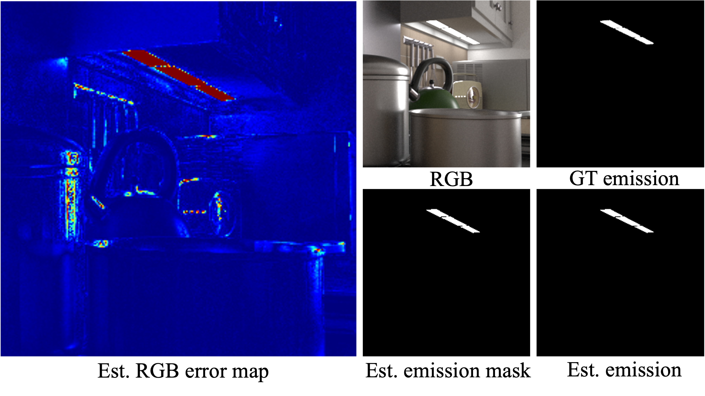

Inverse path tracing has recently been applied to joint material and lighting estimation, given geometry and multi-view HDR observations of an indoor scene. However, it has two major limitations: path tracing is expensive to compute, and ambiguities exist between reflection and emission.
We propose a novel Factorized Inverse Path Tracing (FIPT) method which utilizes a factored light transport formulation and finds emitters driven by rendering errors.
Our algorithm enables accurate material and lighting optimization faster than previous work, and is more effective at resolving ambiguities. The exhaustive experiments on synthetic scenes show that our method (1) outperforms state-of-the-art indoor inverse rendering and relighting methods particularly in the presence of complex illumination effects; (2) speeds up inverse path tracing optimization to less than an hour. We further demonstrate robustness to noisy inputs through material and lighting estimates that allow plausible relighting in a real scene.
Diffuse and specular shadings are initialized by tracing a voxel representation of the surface light field L' (left), which gives approximations (top row on right) close to the ground truth (bottom row on the right; obtained from a physical path tracer).

The wall cabinet's diffuse reflectance estimation is initially darker than ground truth, owing to the excessive incident light received from the range hood that reflects non-diffuse light (2nd column). The artifacts are reduced by growing the path for the specular surface according to the optimized BRDF (1st column), which gives more accurate shadings that can be used to further refine the BRDF (3rd column).

Optimization without emission terms produces distinctive error near emissive surfaces (1st column). By jointly optimizing an emission mask to cancel this error, the emitter can be found by checking the mask's response (works even for tiny emitters), and its emission value can be obtained by median-pooling the RGBs from training pixels.
Qualitative comparison of BRDF and emission on synthetic scenes shows our method successfully reconstructs material reflectance (1st row), roughness (2nd row), and emission (3rd row) with high frequency details and less ambiguity. Emission estimation is shown as error heatmaps (warmer colors indicate higher emission error; GT emitter boundary is marked in white lines).
The capture setting (left) and observations of the real world scenes (middle and right). We present two real world scenes Conference room and Classroom with samples of captured images, reconstructed geometries in 3 views, and all camera poses.

There are numerous excellent works that are most closely related to ours.
IPT and MILO both utilize differentiable path tracing to jointly optimize dense scene BRDF and emission.
IPT takes a piecewise constant parameterization of material to reduce Monte Carlo variance and ambiguity for inverse rendering, losing fine spatial details as a result (similarly in Nimier-David et al.). Directly extending it to complex material representation (i.e. MILO) shows very slow convergence.
In a parallel line of work, NeRF-like methods have been representating incident radiance field of indoor scenes as a 5D network (e.g. NeILF), usually in unconstrained fashion. Most recently, numerous works adopt similar ideas to ours by using pre-baked irradiance (e.g. TexIR, I2-SDF, NeILF++, NeFII), and resort to surface rendering to recover scene materials and/or emission, without modeling global light transport.
In contrast to the aforementioned optimization-based approaches, learning-based approaches leverage lighting and material priors learned from datasets. Philip et al. (FVP) take multiple images and aggregate multiview irradiance and albedo information to a pre-trained network to synthesize the relit image. Li et al. (Li22), Zhu et al. (IRISFormer), Zhu et al., and more recently, Choi et al. (MAIR), learn single-view or multi-view dense lighting and/or BRDF from shading cues or scene features by training on large-scale synthetic datasets.
There is a growing list of related papers by the time you read this. Please feel welcomed to let us know if we missed anything and we will update here.
@misc{fipt2023,
title={Factorized Inverse Path Tracing for Efficient and Accurate Material-Lighting Estimation},
author={Liwen Wu and Rui Zhu and Mustafa B. Yaldiz and Yinhao Zhu and Hong Cai and Janarbek Matai and Fatih Porikli and Tzu-Mao Li and Manmohan Chandraker and Ravi Ramamoorthi},
year={2023},
eprint={2304.05669},
archivePrefix={arXiv},
primaryClass={cs.CV}
}